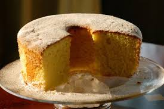

Voltar
Bolo de Laranja°₊ ⊹

O bolo de laranja é uma sobremesa leve e aromática, com massa fofinha e sabor cítrico marcante.
Feito com suco natural da fruta, ele combina doçura e frescor na medida certa.
Pode ser servido simples, com calda de laranja ou coberto com uma fina camada de açúcar cristalizado, ideal para acompanhar um café da tarde ou um lanche especial.
˚₊‧꒰Lista de Ingredientes para Bolo de Laranja꒱ ‧₊˚
- 3 ovos
- 1 xícara de óleo(preferencia de girassol ou milho);
- 1 xícara de suco de laranja natural;
- 2 xícaras de açúcar;
- 2 e 1/2 xícaras de farinha de trigo;
- 1 colher de sopa de fermento em pó.
˚₊‧꒰Modo de Preparo꒱ ‧₊˚
- Preaqueça o forno a 180°C e unte uma forma com manteiga e farinha.
- No liquidificador, bata os ovos, o óleo, o suco de laranja e o açúcar até a mistura ficar homogênea.
- Transfira para uma tigela e adicione a farinha de trigo aos poucos, mexendo bem com uma colher ou fouet.
- Acrescente o fermento e misture delicadamente, só até incorporar.
- Despeje a massa na forma e leve ao forno por cerca de 35 a 45 minutos, ou até dourar e o palito sair limpo.
- Deixe esfriar um pouco, desenforme e, se quiser, finalize com uma calda de laranja.